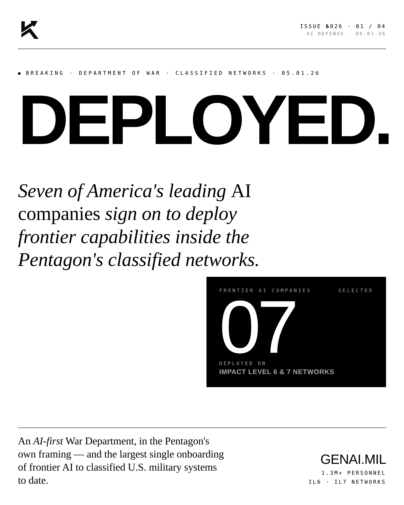
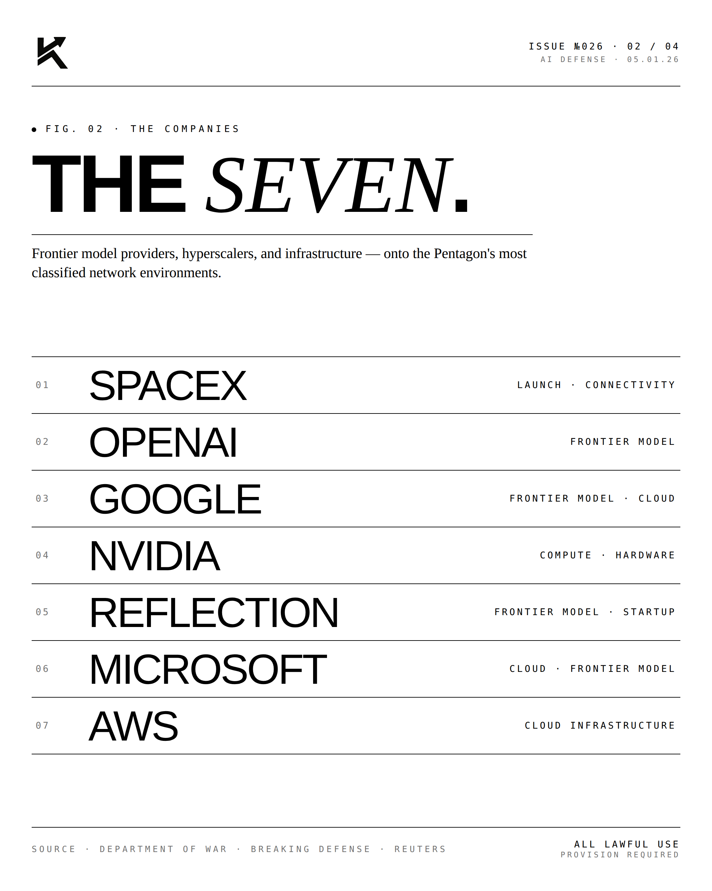
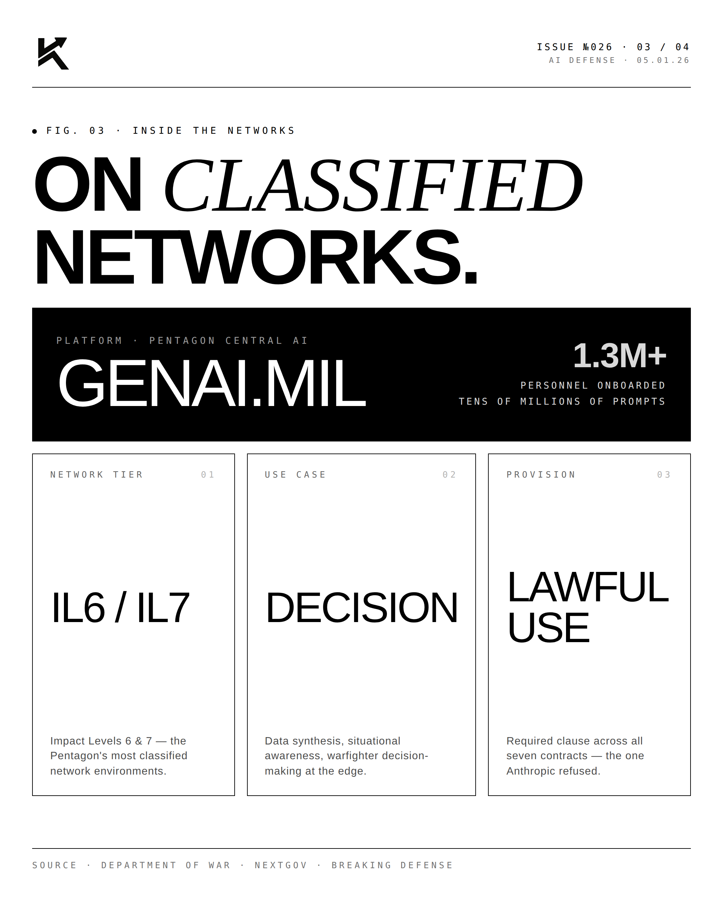
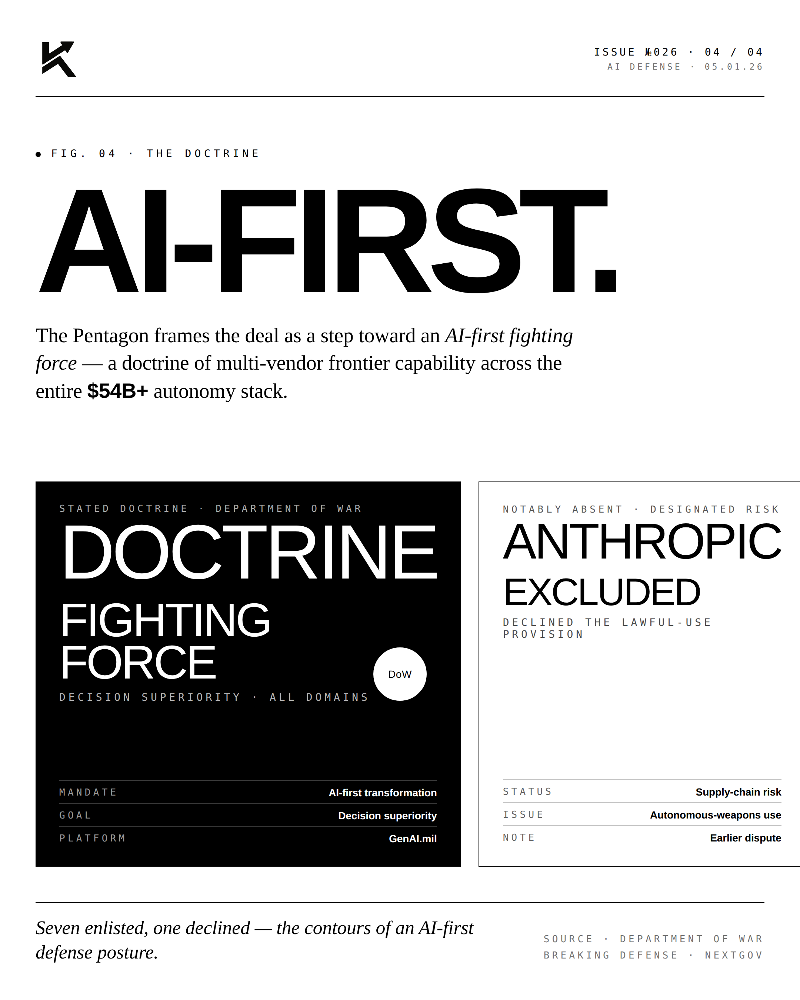

Deployed.
Seven of America's leading AI companies signed on to deploy frontier capabilities inside the Pentagon's classified networks. The Department of War has its software stack.

The Seven.
The Department of War (formerly Department of Defense) brought seven of America's leading AI companies onto classified networks. The deployment covers Impact Level 6 and 7 networks — the most sensitive tiers, used for classified planning, intelligence, and operations. This is the first time frontier-grade commercial AI has operated at this classification level at scale.

The Networks.
Impact Level 6 networks handle Secret-level data. Impact Level 7 handles Top Secret. Most commercial software can't touch these networks at all. The seven AI companies entering this environment unlocks frontier-grade reasoning, planning, and analysis for the warfighter — and for the analyst inside the SCIF.

The Doctrine.
This isn't a procurement event. It's a doctrinal shift. The Pentagon's posture toward commercial AI has moved from skepticism to dependency. Future doctrine will be written assuming AI is in the loop at every echelon.
"Frontier capability,
inside the wire."EDITORIALOn AI in the Pentagon · 2026
"We are bringing the best of American AI to bear on the hardest national security problems. The work will be classified. The impact will be visible."

The doctrine changed. The capability is in the wire. The Department of War is software-defined.
Disclosure
Personal commentary and editorial analysis. Not investment advice, not an offer or solicitation.